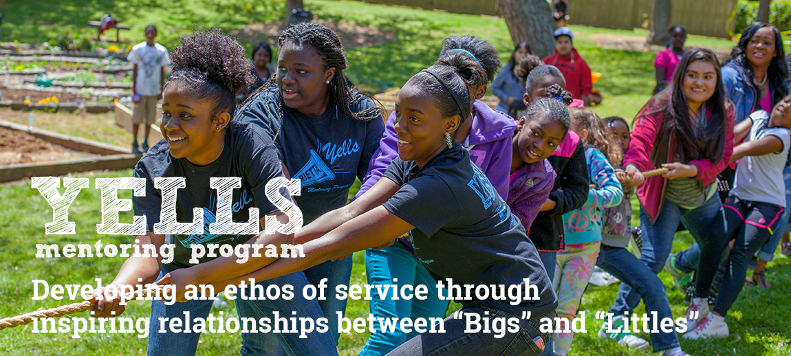
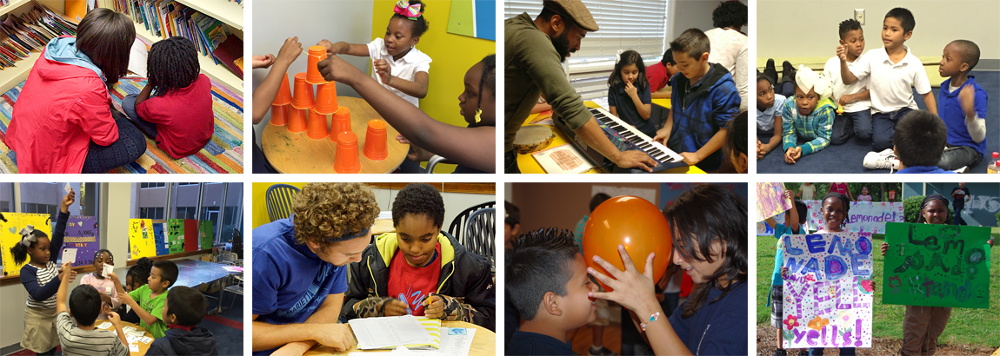
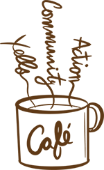
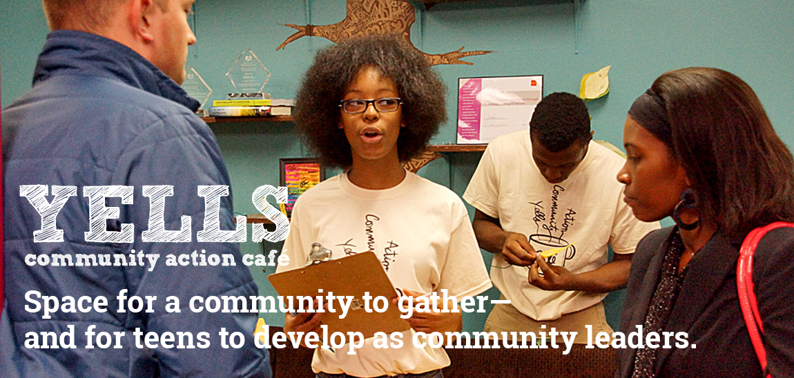
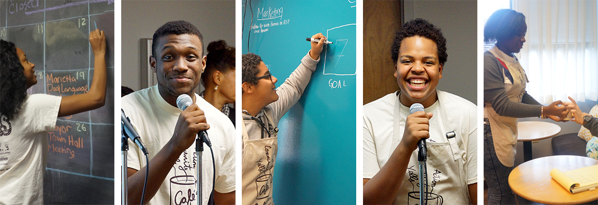

YELLS offers three core programs designed to support youth at every stage of their development. From elementary school through young adulthood, we provide the mentoring, skills, and opportunities young people need to thrive.
Mentoring Program

Our flagship Mentoring Program pairs high school and college students with younger peers for transformative mentoring relationships. Through outdoor activities, community service projects, and life skills workshops, mentors guide youth toward becoming confident, capable leaders.
Program Highlights
- One-on-one and group mentoring sessions
- Outdoor education and garden-based learning
- Leadership development workshops
- Community service projects
- Character education and social-emotional learning
- Academic support and goal-setting
Who Can Participate?
The Mentoring Program serves youth from elementary through high school. High school and college students interested in becoming mentors gain valuable leadership experience while making a difference in their community.
Contact Us to Learn MoreAfterschool Program

The YELLS Afterschool Program provides a safe, enriching environment for elementary and middle school students during the critical after-school hours. We combine academic support with hands-on enrichment activities that spark curiosity and build confidence.
Program Components
- Homework help and tutoring
- STEM activities and experiments
- Arts and creative expression
- Physical activity and wellness
- Character development curriculum
- Healthy snacks and nutrition education
Schedule
The Afterschool Program operates Monday through Friday during the school year, immediately following school dismissal until 6:00 PM. Transportation from local schools is available for registered participants.
Enroll Your ChildCommunity Action Cafe


The Community Action Cafe (CAC) is a teen-led social enterprise that teaches job skills, entrepreneurship, and community engagement. Operating as a real cafe, teens learn everything from food preparation and customer service to marketing and financial management.

What Teens Learn
- Food service and hospitality skills
- Customer service excellence
- Financial literacy and money management
- Marketing and social media
- Teamwork and leadership
- Professional communication
Community Impact
Beyond job skills, the CAC teaches teens to be active citizens. Through community action projects, participants identify local needs and develop solutions, learning that they have the power to make positive change in their neighborhoods.
Join the CAC TeamGet Involved with Our Programs
Whether you want to enroll a child, volunteer as a mentor, or support our work financially, there are many ways to be part of the YELLS family.